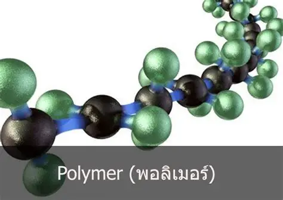

พอลิเมอร์
พอลิเมอร์ (Polymer) คือ สารประกอบที่มีโมเลกุลขนาดใหญ่ เกิดจากการเชื่อมต่อกันของหน่วยโมเลกุลขนาดเล็กจำนวนมากที่เรียกว่า มอนอเมอร์ (Monomer) โดยมอนอเมอร์แต่ละหน่วยจะเชื่อมต่อกันด้วยพันธะเคมีจนกลายเป็นสายโซ่โมเลกุลที่มีความยาวมาก พอลิเมอร์จึงมีสมบัติแตกต่างจากโมเลกุลขนาดเล็กทั่วไป และสามารถนำไปใช้ประโยชน์ได้หลากหลาย พอลิเมอร์สามารถแบ่งตามแหล่งกำเนิดได้เป็น 2 ประเภท ได้แก่ พอลิเมอร์ธรรมชาติและพอลิเมอร์สังเคราะห์ พอลิเมอร์ธรรมชาติเป็นสารที่พบในสิ่งมีชีวิต เช่น แป้ง เซลลูโลส โปรตีน และยางธรรมชาติ ส่วนพอลิเมอร์สังเคราะห์เกิดจากกระบวนการทางเคมี เช่น พอลิเอทิลีน พอลิโพรพิลีน พอลิไวนิลคลอไรด์ และไนลอน ซึ่งถูกนำมาใช้ผลิตถุงพลาสติก ขวดน้ำ เสื้อผ้า และวัสดุต่าง ๆ ในชีวิตประจำวัน พอลิเมอร์มีความสำคัญต่อการดำรงชีวิตและอุตสาหกรรม เนื่องจากสามารถนำมาผลิตวัสดุที่มีน้ำหนักเบา แข็งแรง ยืดหยุ่น หรือขึ้นรูปได้ง่าย จึงถูกนำไปใช้ในบรรจุภัณฑ์ เครื่องใช้ไฟฟ้า อุปกรณ์ทางการแพทย์ เสื้อผ้า และชิ้นส่วนยานยนต์ นอกจากนี้พอลิเมอร์ธรรมชาติยังมีบทบาทสำคัญต่อโครงสร้างและกระบวนการต่าง ๆ ของสิ่งมีชีวิตอีกด้วย